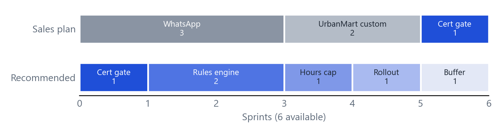

| Account | Asked for | Actually needs | Evidence |
|---|---|---|---|
| FreshBowl ₹84L · Jan 27 · at risk | Swaps requested and approved on WhatsApp | Decisions in minutes, not a day, without dropping the checks | Only 38% approved in 24 hrs. Staff find a partner on WhatsApp in 10 min, then wait a day; "half the time we just swap and don't tell the app". The manager approves almost everything and checks two things: training and overtime. |
| CarePoint ₹60L · Dec 26 · at risk | Block expired certificates | The same: an automatic control instead of a manager's Excel | An auditor found two shifts covered by nurses with lapsed BLS. One more finding means a penalty. The ask and the need match. |
| UrbanMart ₹110L · Aug 27 · healthy | Regional approval for any shift past 48 hrs | Overtime control, without piling approvals on managers | Overtime is 9% of the wage bill. A blanket approval step adds work to a flow where 36% of swaps already wait over a day. Escalate only the exceptions. |
Approval speed is the pattern. All four current accounts under 45% of swaps approved in 24 hrs are at risk or on watch; all four accounts lost this year were at 60% or below (Fig. 1). ₹220L, 54% of ARR, is at risk or on watch and renews by March 2027. UrbanMart is the largest account (27% of ARR) but renews in ten months and is healthy.

Sales' read of the churn is thin. Only GreenLeaf (₹16L of ₹80L lost) went to a WhatsApp competitor, and its former head of operations says it was not WhatsApp: managers couldn't keep up with approvals, and RotaPro let trained staff swap automatically.
The three requests are one mechanism. A certificate expiry, a 48-hour cap and "trained and no overtime" are all checks before someone is assigned a shift. Managers run those checks by hand today. WhatsApp is only a different screen for the same approval.
Two data flags. The FreshBowl manager's "25–30 requests a night" is about 30 times the chain average (2,900 swaps ÷ 120 locations ≈ 24 per location per month), so I treat it as an outlier store; the issue is latency, not volume. And off-app swaps mean recorded swap counts understate real demand.
| Sprint | Ships | For | Exit check |
|---|---|---|---|
| 1 | Credential gate. Required credentials per role with expiry, checked against the shift date. Hard block at scheduling and swap. 30-day expiry alert. Admin-only override, logged. | CarePoint, any regulated role | Live early Nov, ahead of the December renewal. 14-day warn-only period to backfill data, then enforced. Missing data blocks after that; it never passes silently. |
| 2–3 | Rules engine. Training and credential checks, auto-approve for eligible swaps, exceptions to the manager queue, decision log. | FreshBowl pilot, 5–10 stores | ≥85% decided in 24 hrs at pilot stores (baseline 38%). Hypothesis: about 80% auto-approved. |
| 4 | Hours-cap rule. Projected weekly hours vs a configurable cap; above it, route to a designated approver. | UrbanMart (and any account) | Rule live by early Dec as configuration, not a custom branch. |
| 5 | Rollout and hardening: permissions, edge cases, training for managers. | All accounts | Block and override events reviewed; no valid staff wrongly blocked. |
| 6 | Buffer. Decide on WhatsApp using pilot data. | Re-plan if the engine ran long. |

The engine estimate is mine, not Engineering's: about 2 sprints (range 1.5 to 3), with the hours rule adding about 1. At 3 sprints the plan still fits with no buffer; beyond that, the hours rule ships as manager escalation only and WhatsApp is not discussed until Q1. The sales plan (3 + 2 + 1) also fills all six sprints, with no buffer, and shares no code (Fig. 3, last page).
| Account | Message |
|---|---|
| CarePoint | The credential block ships first, early November, covering scheduling and swaps for BLS and council registration. We need your credential list per role and one Admin owner. This week, Customer Success runs an expiry check against your sheet. |
| FreshBowl | Swaps that pass training and overtime checks are approved instantly; the rest still reach the manager. Pilot starts late November in stores you choose. WhatsApp is on the table after the pilot, with real numbers. |
| UrbanMart | The 48-hour rule arrives as a setting, targeted early December (confirmed once Engineering signs off). Please co-design it: the week boundary and who the approvers are. Meanwhile, a weekly list of staff projected above 48 hrs. |
| FitZone, Brew & Co | Both renew before anything ships (Oct, Nov). A Customer Success call this week, with a place in the pilot. A commercial offer is your call. |
Weekly per account: % swaps decided in 24 hrs, share auto-approved, off-app swaps, blocks and overrides, overtime share of wage bill. Risks: bad credential data blocking valid staff (warn-only period first); a wrong auto-approval (every decision logged and explained; unknown training goes to the manager); the engine estimate (checked next week).
Thanks for the memo. You're right on the stakes: UrbanMart is 27% of ARR and RotaPro is a real competitor.
Where I'd change the plan is the diagnosis. GreenLeaf's head of operations told us it wasn't WhatsApp: managers couldn't keep up with approvals, and RotaPro auto-approved trained staff. Every account we lost sat at 60% or below on 24-hour approvals, and our four weakest accounts today are all under 45%. WhatsApp costs three of our six sprints and doesn't touch that.
So we build one rules engine. UrbanMart gets its 48-hour rule as a setting, not a custom build, targeted for early December, about half the effort of the custom version. That is a delivery inside this quarter, not a no.
Certificates aren't only a clinic issue. CarePoint's ₹60L renews in December after an audit finding, and the gate is one sprint. Diagnostics and gyms likely need it too.
Two asks. Find out from UrbanMart's VP what "look at options" means, since it isn't in our interview notes, and who their regional approvers are. And join me on the FreshBowl call: auto-approval first, WhatsApp reviewed after the pilot.
The prototype is a single HTML file with no backend. Pick FreshBowl, CarePoint or UrbanMart and it loads a synthetic night of 30 swap requests. Switch the credential gate, training check, hours cap, approver escalation and auto-approve on or off; every request gets a decision and a step-by-step trace. Credentials are checked against the shift date, not today. "Today's rules" reproduces the current product, where all 30 wait for the manager. Admin override of a block writes to an audit log.
The engine is one function, so it can move into tests. AI: several tools, including ChatGPT and Claude, were used to cross-check the analysis, logic and code, alongside my own thinking and drafting. Chat links can't be shared; I'm happy to walk through the process.
A real version needs from engineering: a per-role credential model with expiry; rule configuration per account; weekly-hours logic (week boundary, leave, both sides of a swap); approver designation and routing; a decision and audit log; notifications; warn-only mode and data backfill; feature flags and tests.
| Working prototype | https://hanvithsai.github.io/Shiftwell/ |
| Source and case files | https://github.com/hanvithSai/Shiftwell |
| AI chat link | Not shareable. Multiple AI tools were used for cross-validation; available to walk through in the interview. |
